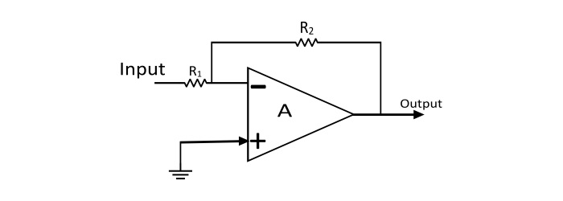
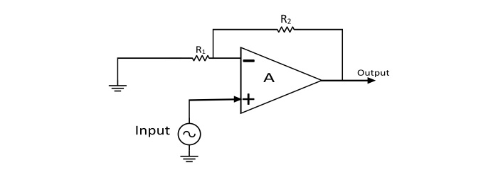

Theory
An operational amplifier is a three-terminal device consisting of two high impedance input
terminals, one is called the inverting input denoted by a negative sign and the other is the non-inverting
input denoted with a positive sign. The third terminal is the output of the Op-Amp.
- Inverting Amplifier
- In the inverting operational amplifier circuit, the signal is applied at the inverting input and the
non-inverting input is connected to the ground. In this type of amplifier, the output is 180⁰ out of
phase to the input, i.e. when positive signal is applied to circuit, the output of the circuit will be
negative. By assuming the Op-Amp is ideal, then the concept of virtual short can be applied at the input
terminals of the Op-Amp. So that voltage at the inverting terminal is equal to the voltage at
non-inverting terminal.
- Voltage Gain(Av) =Vout / Vin=− (R2 /
R2)

- Non-Inverting Operational Amplifier
- When the signal is applied at the non-inverting input, the resulting circuit is known as Non-Inverting
Op-Amp. In this amplifier the output is exactly in phase with the input i.e. when a positive voltage is
applied to the circuit, the output will also be positive. By assuming the Op-Amp is ideal, then concept
of virtual short can be applied i.e. the voltage at the inverting and non-inverting terminal is equal.
- Voltage Gain(Av) =Vout / Vin= 1 + (R2 /
R2)

Component Table
Select the necessary equipment/apparatus/components required for this experiment and
list all of them in below-given space:
| Component Name |
Specifications |
Justification |
|
|
|
|
|
|
|
|
|
|
|
|